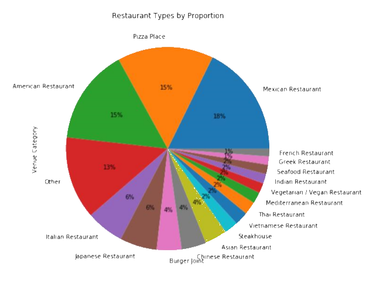

Computer Science for Game Development
Provides in-depth programming experience through assignments where we create or expand on functionalities in games.
To be Completed (Exp. October 2020)

My name is Georges Brunet and I’m an aspiring Game Developer based in Niwot, Colorado.
Ever since I was a little boy, I have always loved to play video games and been fascinated by the work behind them.
Whether the game is a triple - A title or something as simple as Flappy bird, on a high end desktop or a SNES, I have always seen the charm of the art.
I have had a good amount of experience in Data Science and Mathematics in professional settings but I intend on converting these skills into creating wonderful games.
I am currently studying the field of game development and creating as I learn.
These creations will be available in the projects tab, as well as other past, present and future projects!
I am a French native but I have lived and studied in different parts of the world.
I moved away from France in 2003 and since then I have lived or studied in Carmel (Indiana), Millburn (New Jersey),
Sao Paulo (Brazil), Cambridge (United Kingdom), Marbella (Spain), and Boulder (Colorado). I am currently living in Niwot, Colorado.
I enjoy comedy and love the company of my friends and family. In my free time I like to make art, whether it be s
culptures or paintings, watch sports, or my personal favorite: play video games.
I graduated from the University of Colorado, Boulder’s School of Arts & Sciences with a B.A. in Mathematics
with a concentration in Applicability and Statistics in August 2019. Throughout my years at the university
I worked as a Data Analytics Intern at Aspen Growth Ventures, a French Tutor at the French and Italian Department of
the University of Colorado, Boulder, and as a Data Science Intern at Standard Alcohol, Inc.
Feel free to explore my website to learn more about the work that I have done and what my current projects are!
Provides in-depth programming experience through assignments where we create or expand on functionalities in games.
To be Completed (Exp. October 2020)

Provides job-ready skills and techniques including data visualization, data analysis, machine learning, open source tools and libraries, methodologies, Python, databases, and SQL
Completed February 2020
Bachelor of Arts in Mathematics, Concentration in Applicability and Statistics & French Minor
Completed and Graduated August 2019

Located in Southern Boulder, Colorado, I spent the rest of my senior year at this exceptional school.
Graduated in May 2015

Located in Sao Paolo, Brazil, I spent the second semester of Sophomore year, Junior year and a portion of Senior year at this prestigious high school.

Located in Millburn, New Jersey, I spent Freshman and the first semester of Sophomore year at this prestigious high school.
Click on the companies' logos to see what position I held with them and explore the work I've done!
From June 2018 to June 2019, I had the pleasure of working as a Data Science Intern at OctaneX
Technologies, formerly known as Standard Alcohol at the time. As a Data Science Intern,
I performed various tasks such as software engineering, database architecture and management,
product analysis and development, data analytics, and reports generation.
The first project I worked on at OctaneX Technologies was the OctaneX Optimizer.
I was given the task of designing, developing, and coding the software with the creative
guidance of my supervisors. This consisted of creating an easy-to-use and visually appealing
tool with the purpose of optimizing fuel blends under the desired specifics of 38 constraints
given a selection of over a hundred molecules through linear and non-linear programming. This
involved a combination of complex mathematics implemented through code and to quickly learn
previously unfamiliar programming environments.
The OctaneX Optimizer has since been awarded a copyright by the U.S. Copyright Office,
and a registered trademark by the U.S. Patent and Trademark Office.
Upon completing the software my new role in this project evolved to implementing
an automatic analytic reports generator in the software and to maintain the updates
of the OctaneX Optimizer. These reports would provide in-depth information on the blends
concocted by the software such as logistics facilitation, actionable insights on product
development, and serve as quality control to present potential improvements in calculations.
As a French Tutor at the university, I developed and implemented comprehensive lesson plans
for students of lower and higher division levels.
From September 2016 to March 2018, I worked as a tutor at the Department of French and
Italian at the University of Colorado, Boulder. I provided services to students of all levels,
ranging from beginner levels to Master’s levels. As a French native who learned a few other
languages growing up, I have a good sense of what commonalities in certain languages pose problems
to speakers of languages with different grammatical structures. This motivated me to design level
assessments for my students to measure their capabilities in French by topics and pinpoint the
areas of improvement that aligned with the areas they wanted to improve. I also provided
revisions to students’ papers and assisted them in developing their own voice in French in the
form of writing.
As a Data Analytics Intern at AGV, my role included database creation and management, product design and development, and data analytics. I was tasked with developing and implementing an environment for real-time data uptake from market data sources in the energy and specialty chemicals sector that would perform different analyses. This project merged SQL organization and Python package methodologies to create an easy-to-use database that used SQL queries to navigate, and Python package methods to provide visualizations, regression analysis, inferential statistics, hypothesis testing, and forecasting on data that it would append in real-time. The goal of this project was to faciliate screening and analyzing market data as part of a due diligence process for a private equity fund.
French
English
Spanish
Portuguese
Italian
Russian
Excel
PowerPoint
Word
VBA
Python
C++
C
C#
Lua
NumPy
Pandas
SciPy
Matplotlib
Seaborn
Scikit-learn
Statsmodels
SQL
R/Rstudio
Matlab
HTML
CSS3
JavaScript
Game Jams are my favorite way to explore ideas, improve my skills, and test my time-crunching skills!
I highly recommend for anyone looking to delve into game development to hop in to any Game Jam and
try out anything. Whether you prefer gameplay implementation, or creating an immersive feel through art,
these friendly events are a great way to team up with friends or strangers (or even go alone) and try out
whatever interests you.
I have participated in a few Game Jams and intend to participate in many more in the future. You can find my
independent or group submissions below!
The Computer Science for Game Development Certificate on edX provides two courses to immerse the candidates into game development. The first course is a preliminary college course on the fundamentals of Computer Science. The second course, GD50, is the main one in the certificate and provides 11 assignments with the inclusion of a final project for candidates to complete the course. The first 8 assignments are made in Lua to be used on the Love2D platform, version 10.2. The last three are on Unity and use C# for scripting. If you are curious about what these are, you can find my work on these assignments here!
The Data Science Professional Certificate was provided by IBM through Coursera. This certificate provided platforms such as Jupyter Notebooks, Cognitive AI, and more to complete rigorous data analytics and data science assignments. These assignments were mainly former business projects of IBM while other assignments provided deep explorations on the forefront of tools used to perform data science. The last assignment for this certificate was a purely self-conceptualized data science project in which we were to find a problem or interesting set of data, explore it, analyze it, visualize it, and conclude an appropriate developed answer or discover a deeper meaning to it. These conclusions could range from financial insights to simply improvements in quality of life.
I chose to find a mixture of both. I decided my capstone project would be to determine what the most popular type of cuisine is in Denver, Colorado per borough or neighborhood and determine which ones would be good candidates to open up a new restaurant of such cuisine.
I decided to build this project on a Jupyter Notebook using Python as the main language to code, utilizing various Python packages to create the dataframes and perform statistical analysis and visualization.
To determine the range of the neighborhoods I would be analyzing,
I decided to retrieve a csv file containing all the official names of the recognized
neighborhoods of Denver on the city of Denver’s official website. This file would
constitute a list of 78 names to which I attributed central geographical coordinates
using Google’s API.
To determine the venues in those neighborhoods, I used FourSquare’s API to identify
every marked venue within a 1200 meter radius to the center of each neighborhood and
appended them to a dataframe. I applied various filters to remove duplicates and remove
venues that were not restaurants. After restructuring, I had over 1000 restaurants in
Denver and over 40 different types of cuisine.
After applying the various filters mentioned above, I had two dataframes with which
I could work. One dataframe was specifically focused on the neighborhoods and their
distinguishable features (columns), that is to say the neighborhood ID, name, the
neighborhood’s center’s latitude, longitude, the number of restaurants in that neighborhood,
and the number of types of cuisines in that neighborhood. With 6 columns and 78 rows,
this dataframe was mainly used to perform exploratory data analysis to generate visualizations
and insights on distribution.
The second dataframe was the one generated from the venues found by the FourSquare API and
then filtered. This dataframe held all the data on restaurants. Its data features were the
restaurant’s name, type of cuisine, latitude, longitude, and the name, latitude, and longitude
of the neighborhood to which it belonged. With 7 columns and over 1000 rows, this dataframe
provided the raw information to be used in the first dataframe.
Determining which cuisine was the most popular depended on multiple factors. For one,
the distribution of restaurants varied from neighborhood to neighborhood, as one would
expect. Some boroughs had more diversified cuisine and some had more restaurants, but
significantly less diversity. The deciding factor was which cuisine had the greatest
presence, or in other words, which cuisine had the most restaurants in Denver. The calculations
showed that Mexican cuisine was the most prominent type, with 189 restaurants in Denver,
with pizza places and American restaurants in close second and third, with 163 and 162,
respectively. All cuisine types that represented less than 1% of the distribution were
to be appended to the “Other” type to simplify visualizations. As you can see below,
this pie chart represents the distribution of restaurant types in Denver as determined
by my project.

From the information gathered through creating a pie chart, I decided to count how
many Mexican restaurants there were per neighborhood. This would later be used to
calculate the frequency of such restaurants among neighborhoods, but integer
values would give insight as to whether a neighborhood already has a significant number
of Mexican restaurants. I created a double horizontal bar chart displaying the number
of Mexican restaurants per neighborhood in comparison to other restaurants per
neighborhood which demonstrated quite a few things to be considered. It showed that
of all 78 neighborhoods, 12 did not contain any Mexican restaurants. Of those 12,
only 3 had more than 10 restaurants. The earlier bar chart showed the same three had
significant diversity in relation to their number of restaurants. This immediately
led me to know they would be candidate neighborhoods at the end, but I would need
to determine more from the other neighborhoods as 3 candidate neighborhoods are
insufficient. There must be a generally low distribution of already existing Mexican
restaurants in a neighborhood for the potential to place a new one to be viable.
The next step here was to use one hot encoding on the second dataframe to determine
the frequency values of each type of restaurant per neighborhood. Using assistance
from a previous lab in the course and the layout of the code as a template, I created a
dataframe to display this and then displayed a table of the top 5 frequencies of restaurant
types per neighborhood. This led to determining the most common type of restaurant per
neighborhood in descriptive terms instead of numerical values. I displayed a value_counts
table of this information. This table suggested that even though Mexican restaurants were
the most numerous around Denver, American restaurants and Pizza places outnumbered them in
commonality in neighborhoods. This suggested that distribution of American restaurants and
pizza places were denser in some neighborhoods than others and that Mexican restaurants were
more evenly spread. I appended the ‘1st Most Common Restaurant” column to the main dataframe,
and it supplied me with enough information to determine which neighborhoods would be the best
candidates.
The main dataframe to be used to determine the candidate neighborhoods would have 9
descriptive columns: Neighborhood ID, neighborhood, latitude, longitude, number of
Mexican restaurants, number of restaurants, number of categories, 1st most common
restaurant, and the frequency value of Mexican restaurants. Using these defining features,
I would apply constraints as mentioned earlier to determine the proper candidate neighborhoods.
I would base a candidate neighborhood if the number of restaurants per neighborhood is greater
than 10, if the most common restaurant type is not Mexican, and if the Mexican restaurant
frequency in the neighborhood is less than 0.125. I applied these measures and appended the
remaining dataframe to a folium map.
Applying the calculations above returned 17 candidate neighborhoods. Of the 17, 10 had 20
or more restaurants in the area, suggesting they are viable in competition. All neighborhoods
displayed 8 or more restaurant categories, suggesting room for additional diversity and 12 of
the 17 neighborhoods had 2 or less Mexican restaurants. Only 3 of the neighborhoods had 0
Mexican restaurants. The 17 neighborhoods are: Auraria, Cherry Creek, Congress Park, City
Park, Highland, Rosedale, University Park, Mar Lee, Civic Center, CBD, Stapleton, Montbello,
Lowry Field, Skyland, Platt Park, Hampden, and Bear Valley. It is important to note that these
were calculated with the limitations of FourSquare’s ability to detect venues in general and
the limitations of my coding abilities. The reality may differ slightly from the values suggested.
Our analysis shows us that there are 17 neighborhoods in Denver that satisfy all statistical
conditions to be optimal places to open up a new Mexican restaurant. These decisions were made
by calculations based on a filter of 1200 meters from the center of each neighborhood that
captured 4600+ venues at first, which we slimmed down to around 1000+ restaurants. Choosing
the data features for the Venue Categories were vital to the analysis as it provided us with
the range of possible restaurants to use in this project. As we can see from the map, the
neighborhoods of focus are for the main part concentrated near the business center of Denver,
Capitol Hill. This is great news as this is the busiest area of Denver, where socio-economic
dynamics are optimal, and the wide range of diversity in the area makes it so a new restaurant
would fit right in.
I decided not to specify addresses and pinpointing potential locations within the neighborhoods
as my capabilities are limited in those aspects and I wouldn't be able to decipher what is a
realistic potential address from what could be in the middle of a building. I decided to leave
that information for interpretation of the reader, who if interested would be keen to figure out
a desirable spot within that neighborhood.
I also chose to remove neighborhoods with less than 10 restaurants from the final dataframe
as there are many reasons for a neighborhood to have little food venues. Those could be based
on the structure of the neighborhood (if it is mainly residential, for example) or there could
be important underlying reasons for the lack of food attractions. Anyways, I felt they would not
be significant for analysis due to the many complications small numbers bring in making decisions
on opening a new business.
The purpose of this project was to identify which neighborhoods could be viable candidates
to open a new restaurant of a certain type. This type of restaurant would be based on popularity,
which was determined by the total number of those restaurants in Denver. The neighborhoods were
to be picked based on their lack of the most popular type of restaurant, the number of other
restaurants in the area which would suggest if or if not the neighborhood is busy enough to be
viable, and whether the neighborhood had already existing restaurants of that type or not. Fast
Food restaurants were removed from analysis since they can pretty much be placed around a city
like darts thrown randomly at a target. This information in all would aid stakeholders or
aspiring restaurant business owners in Denver to open up a restaurant with a promised audience
in a busy area, yet without a threatening amount of competition. The restaurants used for analysis
had all the information about them gathered through FourSquare and some calculations made above.
The final component of such a decision, choosing the exact place in the neighborhood to open a
restaurant, should be made entirely by the stakeholders or aspiring restaurant business owners.